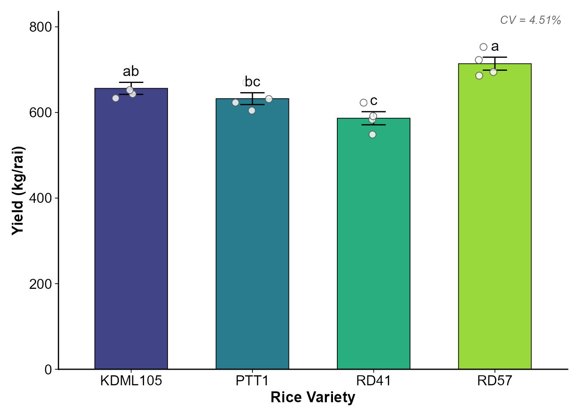

เริ่มต้นใช้งาน khaosuay: การวิเคราะห์ข้อมูลเกษตรง่ายเหมือนหุงข้าว
getting-started.Rmdภาพรวมของแพ็กเกจ (Package Overview)
khaosuay ("ข้าวสวย") นำเสนอแนวคิดการวิเคราะห์ข้อมูลทางเกษตรให้ง่ายเหมือนกับการ “หุงข้าว” โดยแบ่งการทำงานออกเป็น 4 ขั้นตอนหลัก:
| ขั้นตอน | ฟังก์ชัน | คำอุปมา | หน้าที่ |
|---|---|---|---|
| 1 | wash_rice() |
ซาวข้าว | ทำความสะอาดข้อมูล ตรวจ outlier แนะนำสิ่งที่ต้องแก้ไข |
| 2 | taste_rice() |
ชิมข้าว | ตรวจ Assumptions (Normality, Equal Variance) |
| 3 |
cook_crd() / cook_rcbd() /
cook_split()
|
หุงข้าว | วิเคราะห์สถิติตามแผนการทดลอง |
| 4 | plot_cooked() |
จัดจาน | สร้างกราฟพร้อมตีพิมพ์ (publication-ready) |
Workflow ของ khaosuay ออกแบบให้
ฟังก์ชันแต่ละตัวส่งต่อผลลัพธ์ไปยังขั้นตอนถัดไปได้อัตโนมัติ เช่น
wash_rice() ส่งต่อไปยัง taste_rice() แล้วส่งต่อไปยัง
cook_*() จากนั้นก็ plot_cooked() ได้อย่างราบรื่น
wash_rice() --> taste_rice() --> cook_crd() / cook_rcbd() / cook_split() --> plot_cooked()
(ซาวข้าว) (ชิมข้าว) (หุงข้าว) (จัดจาน)ติดตั้งแพ็กเกจ (Installation)
# จาก GitHub
# install.packages("devtools")
devtools::install_github("kanthjs/KhaoSuay")
library(khaosuay)
#> khaosuay: สำหรับกราฟภาษาไทย เรียก setup_thai_font() ก่อนใช้ serve_plate()ตัวอย่างแบบเต็ม: วิเคราะห์ CRD (Quick Start)
สมมติเรามีข้อมูลผลผลิตข้าว 4 สายพันธุ์ ทดลองแบบ CRD 4 ซ้ำ:
# สร้างข้อมูลตัวอย่าง
set.seed(123)
rice_data <- data.frame(
variety = rep(c("KDML105", "RD41", "RD57", "PTT1"), each = 4),
rep = rep(1:4, times = 4),
yield = c(
rnorm(4, mean = 650, sd = 30),
rnorm(4, mean = 580, sd = 25),
rnorm(4, mean = 710, sd = 35),
rnorm(4, mean = 620, sd = 28)
)
)
head(rice_data)
#> variety rep yield
#> 1 KDML105 1 633.1857
#> 2 KDML105 2 643.0947
#> 3 KDML105 3 696.7612
#> 4 KDML105 4 652.1153
#> 5 RD41 1 583.2322
#> 6 RD41 2 622.8766ขั้นตอนที่ 1: wash_rice() — ซาวข้าว ทำความสะอาดข้อมูล
washed <- wash_rice(
data = rice_data,
treatment_col = "variety",
rep_col = "rep",
design_check = TRUE
)
#> [MAP] คอลัมน์กรรมวิธี: 'variety' (ไม่เปลี่ยนชื่อ)
#> [MAP] คอลัมน์ซ้ำ: 'rep' (ไม่เปลี่ยนชื่อ)
#> [INFO] แปลงเป็น Factor: rep
#> Warning in wash_rice(data = rice_data, treatment_col = "variety", rep_col = "rep", : [WARN] ไม่สามารถเช็คแผนการทดลองได้ — ไม่พบคอลัมน์: treatment
#> ลองระบุผ่าน treatment_col / rep_col
#> หรือเพิ่มใน custom_aliases
#>
#> --------------------------------------------------
#> wash_rice v3.1 — สรุปผลการล้างข้าว
#> --------------------------------------------------
#> • แถว: 16 -> 16
#> • คอลัมน์: 3
#> • Factor: rep
#> • Numeric: yield
#> --------------------------------------------------
#> ล้างข้าวเสร็จเรียบร้อย! ข้อมูลพร้อมหุงแล้ว
#> --------------------------------------------------ดูผลการซาวข้าว:
print(washed)
#> ── washed_rice v3.1 ──
#> Rows: 16 | Cols: 3
#>
#> $data → clean data.frame
#> $report → cleaning details
#> $flagged → problematic rows
#> $column_map → name mappingข้อมูลที่สะอาดแล้วอยู่ใน washed$data
และสามารถดูรายละเอียดเพิ่มเติมได้ที่ washed$report (สรุปผลทุกขั้นตอน)
และ washed$flagged (แถวที่ถูก flag)
ขั้นตอนที่ 2: taste_rice() — ชิมข้าว เช็คข้อมูลก่อนหุง
tasted <- taste_rice(
data = washed,
response = "yield",
treatment = "variety",
mode = "both"
)
print(tasted)
#> ── tasted_rice v2.0 ──
#> Design: Single Factor
#> Mode: both
#>
#> response final_class recommendation
#> yield Normal + Equal Variance ✅ ใช้ Fisher's ANOVA → Tukey HSD
#>
#> yield [4 กลุ่ม]: ✅ ใช้ Fisher's ANOVA → Tukey HSDฟังก์ชันจะบอกชัดเจนว่าข้อมูลชุดนี้:
- Normal + Equal Variance → ใช้ ANOVA (Parametric) ได้
- Normal + Unequal Variance → ใช้ Welch’s ANOVA
- Non-normal → ใช้ Kruskal-Wallis (Non-parametric)
ขั้นตอนที่ 3: cook_crd() — หุงข้าว วิเคราะห์สถิติ
cooked <- cook_crd(
data = washed,
response = "yield",
treatment = "variety",
tasted = tasted
)
#>
#> 🌾🌾🌾🌾🌾🌾🌾🌾🌾🌾🌾🌾🌾🌾🌾🌾🌾🌾🌾🌾🌾🌾🌾🌾🌾
#> 🍚 cook_crd v1.1 — ผลการหุงข้าว (CRD)
#> ────────────────────────────────────────────────────────────
#> ────────────────────────────────────────────────────────────
#> 🌾 yield (n=16)
#> Formula: yield ~ variety
#> Assumption: Normal + Equal Variance [✅ จาก taste_rice (ไม่เช็คซ้ำ)]
#> Test: Fisher's ANOVA (Type I)
#> p-value: 0.0004106 ***
#> CV%: 4.51%
#>
#> 📊 Post-Hoc: Tukey's HSD
#> ---------------------------------------------
#> KDML105 mean= 656.29 ± 28.07 [ab]
#> PTT1 mean= 632.20 ± 27.60 [bc]
#> RD41 mean= 586.50 ± 30.62 [c]
#> RD57 mean= 713.95 ± 30.29 [a]
#> ────────────────────────────────────────────────────────────
#> 📋 $results$<var>$summary_table → ตารางพร้อมตีพิมพ์
#> $results$<var>$group_letters → กลุ่มอักษร (a, b, c)
#> $results$<var>$anova_table → ANOVA table
#> $results$<var>$model → aov object
#> 🌾🌾🌾🌾🌾🌾🌾🌾🌾🌾🌾🌾🌾🌾🌾🌾🌾🌾🌾🌾🌾🌾🌾🌾🌾ดูตาราง Summary:
cooked$results$yield$summary_table
#> treatment n mean sd se min max group mean_group
#> 1 KDML105 4 656.29 28.07 14.03 633.19 696.76 ab 656.29 ab
#> 2 PTT1 4 632.20 27.60 13.80 604.44 670.03 bc 632.20 bc
#> 3 RD41 4 586.50 30.62 15.31 548.37 622.88 c 586.50 c
#> 4 RD57 4 713.95 30.29 15.15 685.96 752.84 a 713.95 aขั้นตอนที่ 4: plot_cooked() — จัดจาน สร้างกราฟ
plot_cooked(
cooked = cooked,
response = "yield",
y_label = "Yield (kg/rai)",
x_label = "Rice Variety",
show_letters = TRUE
)
สิ่งที่แต่ละฟังก์ชันทำให้อัตโนมัติ
wash_rice() ซาวข้าว
- ปรับชื่อคอลัมน์ให้เป็นมาตรฐาน (lowercase, ลบช่องว่างส่วนเกิน)
- Smart Alias Dictionary จับคู่ชื่อคอลัมน์ภาษาไทย/อังกฤษ เช่น “สายพันธุ์” → treatment
- แปลง empty string → NA
- แปลงคอลัมน์ที่ควรเป็นตัวเลข (character → numeric)
- แปลงคอลัมน์ที่ควรเป็น factor อัตโนมัติ
- ตรวจจับ outlier (IQR หรือ z-score)
- ตรวจจับค่าติดลบ ค่าซ้ำ ค่านอกพิสัย
- ตรวจสอบความสมดุลของแผนการทดลอง
(
design_check = TRUE) - ตรวจสอบพิกัด GPS (ถ้ามี)
taste_rice() ชิมข้าว
- ทดสอบ Normality ด้วย Shapiro-Wilk test
- ทดสอบ Homogeneity of Variance ด้วย Brown-Forsythe (Levene’s) test
- รองรับ 3 โหมด:
"quick"(raw data),"model"(residuals),"both" - รองรับ Single Factor และ Factorial design
- แสดง Diagnostic plots (QQ plot, Boxplot, Residuals vs Fitted)
- สรุปผลเป็นคำแนะนำที่ชัดเจน
cook_crd() / cook_rcbd() /
cook_split()
- เลือก Parametric หรือ Non-parametric อัตโนมัติจาก
taste_rice() - Parametric: Fisher’s ANOVA → Post-hoc (Tukey / LSD / Duncan)
- Non-parametric: Kruskal-Wallis → Dunn’s test
- คำนวณ CV%, MSE, Summary table พร้อม group letters (a, b, c)
-
cook_split()แยก error term ถูกต้องตาม main-plot / sub-plot
แผนการทดลองที่รองรับ
| แผนการทดลอง | ฟังก์ชัน | ลักษณะ |
|---|---|---|
| CRD | cook_crd() |
Single factor หรือ Factorial |
| RCBD | cook_rcbd() |
Single factor หรือ Factorial in RCBD |
| Split-plot | cook_split() |
Main-plot + Sub-plot + Block |
ดูรายละเอียดและตัวอย่างเพิ่มเติมได้ที่:
-
การซาวข้าวและชิมข้าว —
wash_rice()+taste_rice()อย่างละเอียด - การหุงข้าว: CRD, RCBD, Split-plot — เปรียบเทียบทั้ง 3 แผนการทดลอง
-
การจัดจาน: สร้างกราฟสวยงาม —
ปรับแต่ง
plot_cooked()แบบต่าง ๆ